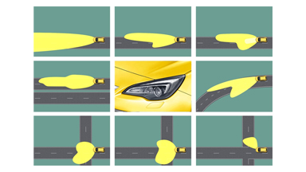

СИСТЕМА ОСВЕЩЕНИЯ AFL, РАЗРАБОТАННАЯ OPEL, ПОЛУЧАЕТ НАГРАДУ EURO NCAP ADVANCED
Европейский комитет по проведению независимых краш-тестов (Euro NCAP) присудил свою высшую награду системе адаптивного головного освещения AFL Opel.
Система AFL, сочетающая в себе функции динамического и статического освещения поворотов, значительно снижает риск ДТП при движении в ночное время и во время сумерек.
Компания Opel стала первым автопроизводителем, выпустившим ее на рынок в 2002 году. Существует также модификация AFL+ с восемью дополнительными автоматическими функциями освещения.
В системе AFL+ используются би-ксеноновые фары с системой управления шириной и длиной световых лучей, которые обеспечивает водителю оптимальную видимость дороги при движении в городе,
пешеходных зонах, по проселочным дорогам и автомагистралям. Кроме того, система обладает функциями освещения в плохую погоду, статического и динамического освещения поворотов,
автоматического переключения дальнего света и светодиодными дневными ходовыми огнями. Датчики и программное обеспечение позволяют системе постоянно контролировать уровень освещения,
характер дорожного движения и погодные условия для выбора оптимального режима освещения.
Вождение в ночное время или в условиях плохой видимости более опасно
Несмотря на то, что ночью уровень интенсивности движения на дорогах в среднем на 33% ниже, чем днем, в темное время суток и
в сумерки происходит в два раза больше ДТП, чем в светлое время суток.
Результаты исследований, проведенных Германским федеральным научно-исследовательским институтом дорожного движения, показывают,
что водители старше 40 лет в сумерках видят хуже и больше подвержены ослеплению.
Opel: мировой лидер технологий, обеспечивающий комфорт и безопасность при вождении
За систему освещения AFL компания Opel получила уже вторую награду Euro NCAP Advanced: первой была отмечена система в 2010 году на Парижском автосалоне.
Euro NCAP Advanced — новая награда за инновационные разработки в сфере автомобильной безопасности, учрежденная в дополнение к существующему рейтингу Euro NCAP по направлениям:
системы активной безопасности и технологии по защите пассажиров, водителей и пешеходов.